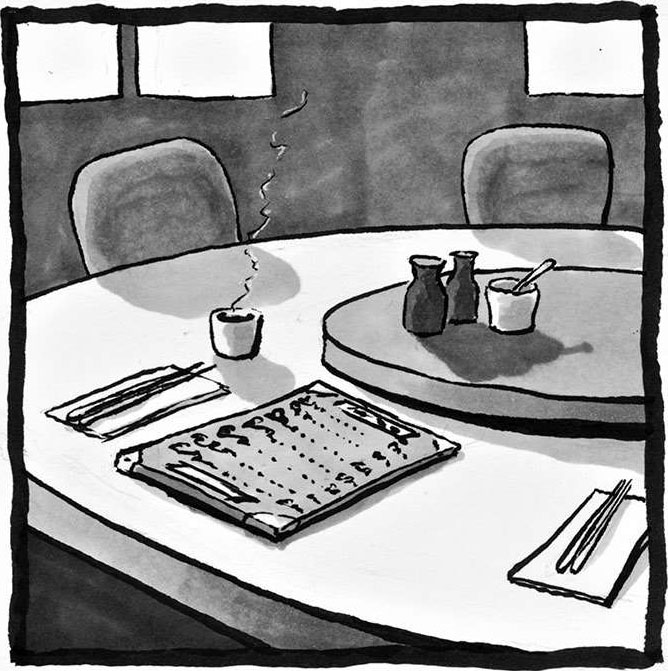

10 公正
公正。亲自见到某个人时（或是认真评判某个人时），你可能会惊讶地发现，他和你之前所预想的有很大不同，或者确切地说，我们要换一个角度，或是用全新的眼光去看待他。每个人都在无声地呐喊，期望自己能够得到他人的正确解读。
——西蒙娜·韦伊1
我最喜欢的那家中餐厅做菜非常地道，口味和我父母做的饭菜别无二致。点完主菜以后，他们还会赠送一些小份的开胃菜和甜点。虽然这些开胃菜（脆面条）和甜点（果冻）不太正宗，但毕竟是赠品，我也没什么好抱怨的。
不过有一天，当我和一位讲中文的朋友一起去用餐时，事情出现了改变：端上来的开胃菜不再是脆面条，而是美味的腌黄瓜，可是我的朋友并没有跟服务员提过这种要求。后来我发现，甜品也不一样了，变成了红豆汤——我小时候最喜欢红豆汤了！我感到很奇怪，为什么之前餐厅没给我提供过这些东西呢？

我逐渐发现了规律：如果我的同伴不是亚洲人，餐厅会提供脆面条和果冻。但如果我的同伴是亚洲人，不用我提要求，餐厅就会自动把好吃的东西端上来。
我还发现，服务员会给我的中国朋友提供一份完全不同的菜单，也就是“秘密菜单”，上面的菜品明显更为正宗。我环顾餐厅，注意到一个奇怪的现象，哪怕大家紧挨着坐在一起，用餐体验也完全不同：非亚洲人士会拿到一份标准菜单，获赠一份果冻；亚洲人士会拿到一份秘密菜单，然后享用正宗的红豆汤。
服务员跟我说：“你不会喜欢那份菜单上的东西的。”尽管我有中国血统，服务员仍旧做出了这种假定。只因我操着一口流利的英语，他们就觉得我不可能喜欢正宗的中国菜。
数学领域中——无论是在家里还是在教室里——也会发生类似的事情。谁有资格去瞥一眼数学中的那份秘密菜单？谁有机会和我们一同分享数学中的乐趣，例如谜题、游戏、玩具？谁能得到我们的认可，走进我们的数学圈子，和我们一同分享各种新闻、视频、社交媒体上的文章？我们该鼓励哪些人去学习更多数学知识，劝导哪些人放弃数学？我们在有意或无意中做出了哪些假设？
明美（Akemi）是我的学生，从本科时期就开始跟着我做数学科研项目。她曾将博弈论（一种研究决策过程的数学模型）和系统发生学（主要研究各种生物之间的关系）结合在一起，写出了一篇极具创新性的论文，并成功发表在一份声誉极高的数学生物学期刊上。后来她又去了一所顶尖的研究型大学，攻读数学博士学位。所以得知她仅读了一年就选择辍学的消息时，我感到有些不可思议。
她告诉我，她经历了太多糟心的事情。她的导师一直不愿意和她见面，此外，她还因为自己的女性身份经历过许多令人不快的事情。她举了这样一个例子：
课程刚开始的时候，作业都是助教在批改，我的分数一直都是满分 10 分。有一天，杰夫（我们都认识的一个朋友）跟我说，某次他和助教出去玩的时候，有人问他这门分析课程的学生表现如何。助教回答的时候一直在夸某个名叫明美的“小伙子”，说“他的”作业是多么多么的完美，解题思路是多么多么的清晰，等等。后来杰夫告诉助教明美其实是个女孩，助教感到十分震惊。（杰夫之所以告诉我这件事，是因为他觉得很有趣：首先，助教居然觉得明美是个男孩的名字；其次，助教得知真相时脸上的表情实在太夸张了。）自此以后，我的作业再也没有得过满分，试卷上的评分标准也越来越苛刻——大部分的扣分原因都模棱两可，旁边的批注也都是“细节可以再丰富一下”之类无关痛痒的话。我不觉得我对知识的掌握水平会下降得如此之快，如此夸张。不过怎么说呢，没准儿真的是我搞错了，或许我真的有所退步吧。
如果你觉得这种现象的确存在某些问题，那么恭喜你，你心中的这种感受正是人生繁荣发展的某个重要标志：对公正的渴求。公正是人类内心深处的一种基本渴求。
公正意味着公平对待他人——让每个人都能得到应得的待遇。这意味着我们要为那些最容易受到不公正待遇的弱势群体发声。有些宗教传统（包括我的）会提倡多照顾孤儿寡母，多关心移民和穷人。我认为数学领域中也存在类似的人，比如那些缺少支持的人，那些缺少数学背景的人，那些刚刚接触数学的人，以及那些缺少数学资源、找不到学习途径的人。他们便是数学领域中的弱势群体。
有人把正义分成了两类：基础正义（primary justice）和矫正正义（rectifying justice）。1二者都很重要，缺一不可。基础正义主要指人与人之间正确的相处方式：彼此关怀，互相尊重，当然还包括为了实现这种愿景而建立起的各种社会实践和社会制度。如果我们可以公正地对待他人，自己也能够得到公正对待，人类社会就可以实现蓬勃发展。
矫正正义指的是发现错误，努力改正。倘若我们已经彻底实现了基础正义，矫正正义便无从谈起。不过现实并没有这般美好，不公现象无处不在。建立在强制力之上的相处方式具有极强的破坏性。有些人、有些制度会以难以察觉的方式，默默地催生各种不公现象。
西蒙娜·韦伊意识到，想要矫正不公现象，我们就必须改变看待他人的方式。“每个人都在无声地呐喊，期望自己能够得到他人的正确解读”，其中“解读”指的就是评判。一方面，明美希望得到助教的公正评判，可另一方面，这位助教很可能根本没意识到他做错了什么。这就是所谓的隐性偏见：潜意识中的刻板印象会在无形当中影响我们的决策。在批评明美的助教之前，我们必须明白，想要实现人与人之间的正确解读，我们需要从自身做起。我曾参加过一个诊断测试，结果发现自己身上也存在着隐性偏见的问题，于是我清醒地认识到，尽管我已经很努力地去做到公平公正，可还是无法彻底摒弃偏见。2
我们每个人的心中都存在隐性偏见。大量实验表明：对于两份除了姓名（一个带有正面的刻板印象，另一个带有负面的刻板印象）之外几乎一模一样的简历，评委会对姓名带有正面刻板印象的那份简历给出更高的评价。哪怕评委自己就来自负面刻板印象的群体，也会出现这种情况。此外，类似的研究结果证实，学生们的数学成绩和教师与家长的刻板印象有关。例如，2018 年一项针对小学数学考试成绩的研究表明，与校外不清楚学生具体性别的评估人士给出的分数相比，校内教师给女生打出的分数偏低（男生偏高），而且这种偏见会带来长期的、持续性的负面影响，具体表现为，和其他人相比，这些女孩升到高中以后更不愿意学习高阶数学课程。3此外，2019 年的一项研究表明，在一个性别偏见程度更强的数学老师的班级，中学生数学成绩中的性别差异会进一步扩大，女孩们的信心会进一步下降。因为表现不佳，她们在升学择校时会主动选择一些要求较低的高中。4此外，父母的刻板印象和对待孩子的态度会让这些问题变得更为复杂，而妇女和少数族裔遭受的影响要更为严重。
如果你相信数学是为了人类繁荣，那么事实可能会令你失望。看看那些统计学数据吧，在数学的学习领域、研究领域，并非所有人都能够做到蓬勃发展。所有种族、民族都有不少学生把STEM（科学、技术、工程、数学）列为主修科目，这些学生占全部学生人数的比例在各种族、各民族中其实都差不多。不过，从成功完成学业、拿到STEM学位的学生比例来看，处于弱势地位的少数族裔明显更为吃亏，其比例仅仅是白人群体的一半多。5低收入家庭大学生的毕业率和第一代大学生的毕业率，远远低于非第一代大学生的毕业率。STEM学科的学习中也存在类似的情况。6在STEM领域，女性中途退出博士研究项目的比例显著高于男性。STEM就像独木桥，能够成功过桥的人，绝大多数都来自家庭条件较为优越的白人群体和男性群体。7越来越多的人因失去兴趣而放弃了STEM，该现象在弱势群体当中尤为突出，“不公正”三个字在这里体现得淋漓尽致。
即便只是谈论百分比，我们似乎也能感受到那种零和博弈的紧张气氛，就好像我学了STEM专业你就不能再学了。然而现实呈现了另一番景象：我们的生活越来越依赖于STEM学科，世界需要更多掌握数学技能的人才。2012 年，美国总统科技顾问委员会给出了一份名为《为了超越而学习》的调研报告，报告估计，为了保持人类在STEM领域的卓越表现，与目前预期的情况相比，仅美国一个国家就需要在未来 10 年内再多培养 100 万STEM领域的毕业生，才能填上人才缺口。尽管数字震撼人心，但我们似乎忘记了另一个显而易见的事实：当一身才华得不到施展机会，那些本可以凭借科研成果造福全人类的天才被白白埋没时，全人类都会蒙受巨大的损失。如果连发挥才能都变成了一个遥不可及的梦，那社会繁荣又从何谈起呢？
为了纠正那些不公现象，我们必须严肃地讨论一下种族、性别、性取向、社会阶层、城乡差异等问题，以及部分群体在数学领域中被边缘化的现象，因为这些问题或现象一旦处理不当，就会进一步增加人与人之间的距离。在讨论过程中，我们可能会产生一些复杂情绪，不过我们必须克制自己，让自己适应这些尖锐的话题，然后倾听彼此的经历，深刻认识到别人所遭受的痛苦。如果有人正在受到伤害，而你想帮助他们，让他们感受到尊严，你就不应无视他们的痛苦——你应该直接问他们：“究竟是什么事让你这般痛苦？”
“我不去想那些有的没的，我对大家一视同仁。”这种态度并不能解决问题，因为无论在哪个群体当中，个体的表现和行为都会影响到所有人。那些被边缘化的群体或许根本没有机会说出这样的话，因为正是那些“有的没的”的事情影响着人们每一天的生活。
所以我们应当彼此鼓励，好让大家都能参与到讨论中来。我们不要急着去分享，而是要先学会倾听，如果有人说了蠢话，要迅速原谅彼此。人无完人，讨论过程中难免犯错，这没什么，总比默不发声置身事外要强，大家保持风度多一分理解就好了。
作为一名华裔美国人，我想跟大家分享一下我亲身经历过的种族问题。我在得克萨斯州的一个小镇度过了自己的童年，白人和拉丁裔是当地的主要人种。很小的时候我就意识到，我们家的礼仪习俗和生活习惯与小伙伴们有所不同——穿着打扮不同，饭盒里的午餐也不一样——这些事情让我在同学中陷于孤立。由于一直被别人指指点点，我特别想变成一个白人。我几乎找不到什么亚裔美国人能够作为我的奋斗榜样。我清楚地记得，每当记者宗毓华出现在电视上时，我妈都会把我叫过去一起收看节目，因为媒体上很少出现黄种人。而我爸则会收集那些由亚裔美国人报道的新闻，把报纸上的相关段落剪辑成册。作为亚裔，我感到无比尴尬，所以我努力学习白人的言行举止，试图让自己看上去像一个白人，尽管我长得并不算白。在公开场合，我会藏起身上一切和亚裔相关的行为特征，故意对中式食物不屑一顾，对中华礼仪漠不关心，同时我还换了发型，调整了衣着打扮和说话方式，尽量让自己看起来和白人朋友一样。
更糟的是，即便在华人社区，我也感到格格不入。我不会说中文，言谈举止也和中国人不一样。在中餐馆用餐的时候，他们会像招待白人一样招待我。这就是在正宗中餐馆里我从未拿到过秘密菜单的原因。像我这样的亚裔美国人，常常会觉得自己生活在两种文化的夹缝当中，总是被两个圈子视为外人，完全没有办法彻底融入其中任何一个。
当然，亚裔的身份有时也能给我带来一些好处。比如大家会因为我的亚裔身份刻板地认为我擅长数学，所以我在学习数学的时候从来没有受到过任何阻拦（可惜我的女性朋友们没有这么幸运），参加数学会议的时候也从来没有人质疑过我的资格（可惜我的非洲裔美国朋友们常会遭遇这种事）。不过话又说回来，即便我因亚裔身份得到了一定的便利，我也清楚地知道，那些数学不太好的亚裔朋友，有时会因别人对亚裔的这种刻板印象而感到尴尬。
搬到加利福尼亚州以后，我第一次有了自己不属于少数族裔的感觉，因为那里有很多很多亚裔美国人。在得克萨斯州的时候，我常常会被问到这样一个本来不带有什么恶意的问题：“你英语真不错！你是哪里人？”在给出“我就是得克萨斯州的”这个答案以后，我总会听到他们追问，“噢，你搞错了，我的意思是，你祖籍是哪里？”在加利福尼亚，这种情况少了很多，我有了一种自由自在的感觉，因为我再也不用面对那些让我感到受伤的话语和问题了。
如今，我已经习惯了在各种数学会议上看到茫茫一片的白人面孔，所以我当选为美国数学协会会长之后，看到有人以“愤怒的亚裔”的名义发表了一篇长文时，感觉非常惊讶。（这个人其实是一位著名博主，发表的内容大多与亚裔美国人所遭遇的种族歧视问题相关。）
这位“愤怒的亚裔”翻遍了美国数学协会官网上的照片，想要看看在最近 100 年当中有几位会长是亚裔，结果他惊讶地发现，除了我以外，其他历任会长都是白人。于是，为了表达自己的讽刺，他写了一篇题为《可算是找到一个擅长数学的亚裔了》的博客文章。8
的确，我是美国数学协会会长这个职位上的第一位有色人种。人们在思考“谁能担当大任，成为优秀领导”这个问题时，包括亚裔在内的少数族裔很容易就会被排除在候选之外。虽然这一行为可能是无意识的，但我们在分析谁适合干这个、谁适合干那个时，常常会受到该角色或职位既有形象的影响，脑海中不知不觉就产生了隐性偏见。这是因为，我们根本没有意识到人员的多样化能给行业带来多大的好处，能给人类带来多少新思想、新知识。事实上，由于缺少不同的声音，数学领域已经不再像以前一样多姿多彩。数学教育专家罗谢勒·古铁雷斯（Rochelle Gutiérrez）提醒大家，仅仅因为人类需要数学，并不能够让数学健康发展。为了保证数学的创新性，我们需要多元化的人才：“特定人群会因数学而受益，这没有错，但大家总会忽视另一个事实，那就是，数学正是因为这群人的存在才得以壮大、发展。”9
我之所以在这里跟大家讨论这些话题，完全出于我对广大数学探索者群体的深厚感情。我希望我们每个人都能够蓬勃发展，让每一位初来乍到的探索者都能有一个容身之所，不要再在意大家的身份、背景。我相信我们可以做得更好。
除了隐性偏见，数学中还有很多东西会影响大家的判断力。
我们常常会用成绩来衡量一个人在数学上的成就和前途。其实很多东西都可以证明，这种衡量方式并不可取。我曾遇到过很多成绩并不出色的学生，他们的大学数学成绩基本上都是B，于是我总是担心他们能否顺利拿到研究生学位。不过事实证明，后来这些学生中有很多人成功拿到了博士学位，甚至在职业数学的道路上大放异彩。
成绩可以衡量进步的程度，但绝对无法说明前途的高低。每个人对数学知识的掌握方式都不相同。你看到的只是他们当前的表现，而不是他们的发展轨迹，也不是他们的职业前景。你无法预测这些人将来在数学领域会有怎样的成就。不过你可以伸出援手，助他们一臂之力。当别人在数学中遇到障碍或瓶颈时，我们不应该降低对他们的期望，而是应该给予他们更多的支持。
根据自身的经验优势去分析别人数学不好的原因，这很容易，但想要感同身受地去理解我们未曾经历过的艰难处境却很难，有时我们根本不知道别人正面临着怎样的麻烦。有位学生曾泪流满面地向我哭诉，因为父母不懂英语，她费了好大工夫才填好了助学贷款的申请表格。由于是移民家庭，她的家人希望她每周末都能待在家里，然而她家的环境并不适合做作业。对很多人来说，大学意味着文化冲击，校园里面有很多不成文的规矩。对这位学生来说，现实过于复杂，简直难以应对。由于现实条件的制约，她没有办法在数学上表现出她最好的一面。
克里斯托弗·杰克逊也饱受现实条件的困扰。身处监狱，他无法和其他人一起学习，而且他已经十多年（也可能更久）没上过学了。他只能尝试走出一条属于自己的数学学习道路，找出一种属于自己的数学表达方式。像我之前那样一边学习一边交流，对于他来说只能是一种奢望。我敢肯定，传统的评估方式根本无法反映他的真实水平。
“成绩不佳”绝对不能成为剥夺学生学习机会的理由。很多K-12学校会按照成绩给学生分组——对于分数较低的学生，学校会给他们提供一种特殊的、毫无前途的课程安排——这是多么的不公平啊！决定谁去参加“低水平”课程，这一行为本身就带有偏见色彩。这些学生会被分配到没什么教学经验的教师手中，学习一些根本没有什么用的课程，这些课程完全无法帮助他们走进大学，也无法让他们找到一份好工作。每天的生活就是死记硬背，根本找不到学习的意义，也体现不出人生的价值，这导致他们在数学方面很难有所成就。所以说，按成绩给学生分组这种做法是一种强制行为，必须予以抵制。10
我们会先入为主地认为数学和文化之间没什么关系。很多人都会这么想，尤其那些来自优势群体的人。这种观念会导致我们错误地评估学生的知识水平。某位数学家朋友跟我分享了下面这个案例：
在某次考试中，我问了一个经典的费米问题，“请估算一下这个城市中有多少位钢琴调音师。”有个学生不好意思地举起了手，小声地问我：“请问‘调音师’这三个字，指的是人还是设备？”这时我才发现，有些学生觉得水平较高的钢琴家可以自己给钢琴调音，还有些学生认为调音师平常会在乐器商店上班，真正知道钢琴多久调一次音、调一次音要花费多长时间的学生寥寥无几。这次经历让我意识到，自身生活经历在解决问题时有多么重要，有些看起来只和数学相关的问题，实际上还会涉及文化背景和生活经历等多种因素。
我当年其实也很有可能一脸茫然，成为那些面带困惑的学生当中的一员，因为我家里没有钢琴，我对它也不熟悉。假如某个学生缺少丰富的生活经历，也没有相关的文化背景，学习数学时总是遇到各种各样的障碍，那他还能在数学中找到归属感吗？虽然文化障碍不可避免，但只要我们能够意识到障碍的存在，就可以想办法减轻它们的影响。
数学教育专家威廉·泰特（William Tate）指出，学习数学时，这种现象在非洲裔美国儿童群体当中十分常见，因为教师采用的教学方案往往都是针对白人中产阶级家庭制订的。他还表示，为了让教学方式更加公平，有必要把整个教学体系和非洲裔学生的现实处境有机结合起来。11他呼吁教师们采用“以学生为本”的理念：允许学生们根据自己的生活经验、文化背景去解决问题，鼓励学生们多角度认知问题，让他们去思考班级里、学校中、社会上的其他人对同一个问题会有什么不同的看法。比如，教师可以把“钢琴调音师问题”优化为一个多样化的估算问题，让学生们根据日常生活和奋斗经历去主动选择自己感兴趣的主题。
我们还会先入为主地认为某些人不会在数学方面取得什么成就，然后告诫他们最好离数学远一点。就像服务员对我说的那样，“你不会喜欢那份菜单上的东西的”。不过，倘若你真的相信数学是为了人类繁荣而存在，那你为什么要干这种事呢？
2015 年，我非常荣幸地成为MSRI-UP项目（美国数学科学研究所针对本科生开展的项目）的负责人，该项目的根本目的是为那些学术背景较弱的学生（比如西班牙裔学生、非洲裔学生，以及第一代大学生）提供一次参加暑期调研活动的机会。活动结束后，我让大家讲讲他们在数学学习过程中遇到过哪些障碍。有位在整个暑期表现都十分出色的学生跟我分享了开学以后她在数学分析课程中的经历：
虽然这门课程本身就够难了，但教授的羞辱让我更加难过。他让我们觉得自己根本没有数学天赋，甚至还直截了当地建议我们换一个“更容易的”专业去学。
遭受了太多类似的糟糕经历之后，她把主修专业换成了工程学。
我希望大家能够明白：无论出于什么样的理由，我们都不应该跟别人说她不适合学习数学。学习数学是她自己做的决定，你无权干涉。你并不清楚他人的真实能力。我的一位数学教授朋友跟我分享了他在学生时代的一次亲身经历：
事件的主人公是一位教师，当时他把我叫进办公室，避开旁人跟我说了一段话。那段话的开头是这样的：“我跟你说这些话没别的意思，只是出于好意……”然后他表明了他的担忧，他说我的资质一般，其实不太适合从事专业数学研究。可是事实证明，我后来的表现并没有像他说的那样糟糕。不过公平起见，我还是得补充一点，那就是几年之后那位教师又找到了我，就当年的言论跟我道了歉。虽然我把他当朋友，但是在研究生培训项目中我还是会用他的例子来告诫大家，任何以“我跟你说这些话没别的意思，只是出于好意……”开头的对话，绝大多数情况下都不会真的出于善意。
大家可以看到，我这位朋友如今已经成为一名颇有成就的数学家。由于彼此之间的了解其实十分有限，上面那种劝告很容易把个人偏见掺杂进去。
另一位来自MSRI-UP项目、名为奥斯卡的学生跟我分享了他的学习经历。尽管他的主修科目也是数学，但由于自身特殊的背景，他没能像周围的同学一样，在进入大学之前就拿到很多进阶先修课程学分。
在学习复分析时，我发现自己的学习经历和其他人很不一样。当时有位同学正在黑板上推演解题步骤，过程涉及一些复杂的推导方式。他一边跳过了几个步骤，一边跟大家说：“我觉得这里可以省略一些代数过程，反正大家早就学过微积分了！”教授点头表示同意，同学们也发出了会心的笑声，只有我一头雾水。我小声地跟教授说，我上大学之后才开始接触微积分。教授十分惊讶：“哇哦，我之前不知道你的情况，居然有这种事！”其实从刚开始接触数学的那一刻，我就不是那种“数学尖子生”，我不知道自己是应该为此感到自豪还是尴尬。自豪是因为我的起点并不高，但如今我还是凭借自身努力来到了大学校园，朝着数学学位冲刺；尴尬是因为类似刚才发生的那些事情，让我感觉自己好像从一开始就不属于这门课程，不属于这间教室。
奥斯卡之所以会以这门课程作为大学课程的开端，是因为他得到了另一位教授的大力支持。奥斯卡表示：
她为我提供了第一次做科研的机会，还经常鼓励我学习更高深的数学知识。此外我常常会向她吐露心声，跟她分享我作为一名“数学当中的少数派人士”在学习过程中遇到的种种困难和内心的挣扎，因为作为一名女性，她也有过和我类似的经历！后来，那位复分析教授也成了我的导师之一。由于她并不清楚她当时的反应可能会伤害到我的感情（我觉得她未必有什么过错！），我决定把那件事当成一个笑谈。当时像我一样数学功底较弱的学生很少，我本来就因此而缺乏自信，她当时的反应只不过让我更加不自信罢了。
其实，奥斯卡的数学底子并不弱——绝对在标准线以上。我可以自豪地告诉大家，奥斯卡和他的团队在暑期时就根据他们的调研项目发表了一篇论文，如今他已经成功迈入了研究生阶段。
从奥斯卡的经历中我们可以感受到他人的支持有多么重要，我们需要身旁能有人鼓励我们：“我看到了你的表现，我认为你完全有能力在数学方面取得一番成就。”这种鼓励对每个人都很有效，不过对那些边缘化群体来说更为难能可贵，因为他们听到了太多反对的声音，有太多人认为他们不适合从事数学工作。你能不能成为那个善于鼓励他人的人呢？
我们决不能过于精细地区分学生们的学习水平，把他们分成三六九等，因为这样会让那些底子较弱的学生处于不利地位，让他们觉得自己好像低人一等。我在哈佛大学教书的时候就发现，学校把微积分课程分成了三个等级，分别是普通微积分，被称为“数学 25”的快班微积分，以及更高级的、专门为数学底子极强的学生开设的、被称为“数学 55”的超快班微积分。讽刺的是，有很多快班的学生会因为当初没能进入超快班而觉得自己根本不应该把数学当作主修专业，我自己就遇到过好多这样的学生。我不得不反复告诉他们，“数学底子和所在班级都不能说明你的能力”，好让他们安心学习。我希望大学的招生部门和研究生院的招生部门也能牢记这一点。在谈到研究生阶段的学习障碍时，数学家比尔·韦莱斯（Bill Velez）说过这样一段话：“在数学当中，虽然很看重创造力，但我们还是会通过各种手段评估学生的知识水平。为了控制招生人数，各院系会设立一定的入学门槛，效果可以说是相当不错。可是这样一来，进入一流院系的少数族裔学生就越来越少了。”
对公正的不断追寻，可以激励我们去学习更多数学知识，以便有机会矫正各种不公现象，好让那些在数学中处于弱势地位的人（数学中也有像“孤儿”一样需要他人帮助的人，像“寡母”一样需要群体支持的人，像“移民”一样初来乍到的人，像“穷人”一样缺乏机遇的人）能有一个更好的学习环境。在追求数学正义的过程中，我们可以养成很多优秀品格，比如对边缘化群体的同情，对被压迫者的关怀。有时只有站在弱势群体的角度设身处地地想一想，我们才能真的明白他们正持续不断地遭受着怎样的压迫。我们这些条件较好的人，有必要为那些弱势群体提供一些力所能及的帮助。
数学老师乔希·威尔克森（Josh Wilkerson）把他的AP统计学课程打造成了服务学习项目的一部分，并和得克萨斯州奥斯汀市的流浪者援助小组合作，一起进行调查研究和数据分析。为了打破大家对流浪者先入为主的印象，让大家对流浪者失去家庭的原因有一个正确认知，学生们会被要求阅读大量和流浪者相关的“非数学”文章。此外，他们还会进行各种调查活动，和曾经流浪过的人面对面交谈。正如乔希·威尔克森所说：“我希望他们能够意识到，每一个数据点的背后都是一个活生生的人，这个人有自己的故事，而这个故事相当重要。”
对公正的不断追寻，会让我们勇于挑战现状。无论是在学校，还是在工作场所，甚至是在家里，都存在着大量不公正的行为，这些行为已经深深植入了社会的运作方式当中。尽管人们总是得到不同的“菜单”，但从未有人为此发声。有些现象我们从未承认过它们的公正性，但由于我们早就习以为常，已经很难意识到它们的存在，导致它们可以长久地藏身于社会运转方式当中。我们需要一些头脑清醒的人，能够站在社会的怪圈之外呐喊，引起大家对不公现象的关注，呼吁大家改变那些畸形的社会运转方式，让每一个人都能够有尊严地面对数学，都能够在学习过程中感受到他人的关怀。
我梦想着有一天，社会上不再有秘密菜单，每个人都可以根据自己的喜好去学习数学知识，提高数学能力，尽情品味数学当中的各种美味佳肴。或许不久的将来，他们就能成长为一名数学领域的美食鉴赏家，甚至是厨师。我期待这一天的到来。
------租金协调问题------
刚才讨论了数学群体当中的不公行为，但实际上也可以反过来，用数学方法研究什么是公正。在数学和经济学的交叉学科中，有一个被称为“公平分配”的研究领域，主要关注几个人之间公平分配东西的方式。“如何公平地切分蛋糕”便是一个极为典型的问题。可以利用数学中的集合和函数给大家的偏好建模。下面这个问题促使我展开了相关领域的研究：
你和大学校友决定一起租房，而且你已经找到了一个不错的房子。可是，房子中的房间大小不一，各具特色，大家的喜好也各不相同。在大家喜好的房间不存在冲突的情况下，我们是否总能找到一个完美的方案来分摊租金？
答案是肯定的，不过需要一些前提条件。1999 年，我证明了下面这个结论：
租金和谐定理（Rental Harmony Theorem）
假设下面这些条件全部成立：
1.“房子很好”：在每一种租金分配方案中，大家都能够根据相应价格找到自己满意的房间。
2.“封闭偏好”：当租金发生变化，甚至开始接近极值时，如果房客还是愿意住在当前的房间里，那么当租金达到极值时，他还是会保持当前的喜好。
3.“囊中羞涩”：与付费房间相比，人们总是更喜欢免费的房间。
那么一定会存在一种租金分配方式，让每个人都能找到自己满意的房间，且彼此之间不存在任何冲突。
定理的证明借鉴了几何学和组合数学（一门研究计数方法的学科）中的思想，为租金的合理分配提供了一个标准解决方案。当时有位《纽约时报》的记者利用我的方案成功解决了他的租金问题，于是他写了一篇报道，并在网上发布了一个基于此方案开发出来的交互程序。我建议你亲自体验一下这个程序。[1]
顺便说一句，若把“囊中羞涩”这个条件去掉，则该定理仍然成立，只不过会出现“负租金”的现象。换句话说，你仍然可以找到一个让大家都满意的方案，但是你有可能不得不自掏腰包，无偿地请别人来与你合租！
弗朗西斯先生，您好：
之前为了联系上我，您给监狱打了一通又一通电话，对此我实在是感激不尽。大家在监狱外面所做的各种努力，如今渐渐起到了效果，我应该很快就能出去了。8 月 31 日那天，我终于拿到了您的来信（8月 16 日至 8 月 28 日期间，他们强迫我接受“医疗观察”，导致我收不到任何邮件）。现在我应该可以正常发送邮件，把发生在我身上的事告诉您了，因为我和政府基本上已经达成了妥协，这一切很快就可以结束了。我估计明天就能有个结果。
我从您那里学到了一件很重要的事情，那就是对于数学，我们不仅要掌握思维，还要发散思维。换句话说，我们不仅要理解数学当中的各种思想，还要探索与数学相关的各种思想。（下面的内容可能有点跑题了。）我还记得第一次踏进思维殿堂时的情形……当时我16 岁，住在一个集体之家当中。负责照看我的社会工作人员给了我3 本书，其中包括《孙子兵法》，虽然这个书名会让很多人望而却步，但站在谋略和战略的角度来看，它无疑是一本旷世奇书。无论是哲学问题，还是更玄妙的形而上学的问题，无论是内部争端、外部冲突，还是为人处世、人际关系……它都能予人启发，让人茅塞顿开。唤起我对哲学的兴趣之后，这些书又引领我领教了政治学、经济学、商学的魅力，最终把我带到了数学面前，令我驻足良久。
2018 年 9 月 5 日
弗朗西斯先生，您好：
9 月 7 日那一天，我停止了绝食抗议。他们要把我调去另一个地方——下周我应该就会坐着大巴离开这里了。动笔写这封信的时候我还没来得及吃东西，因为当时我简直是文思泉涌，感觉有好多话要说。可惜我的双手越来越不听使唤，思绪也越来越缥缈，因为我的血糖数值实在太低了，一直徘徊在 65 左右。
后来我逐渐发现，在我见过的所有思想、概念当中，无论它们属于单学科领域还是跨学科领域，都存在着差不多的基本逻辑，比如秩序、关系、组织、结构、过程等等。
从您这里我学到了大量数学理论，以及各种和数学相关的知识。我不由自主地想到了这样一个问题：您觉得数学是否可以把上面那些基本逻辑串联在一起？
克里斯
2018 年 9 月 9 日
[1]想了解租金和谐定理，参见： Francis E. Su, “Rental Harmony: Sperner’s Lemma in Fair Division,” American Mathematical Monthly 106 (1999): 930-42。《纽约时报》发表的文章作者是Albert Sun, “To Divide the Rent, Start with a Triangle,” New York Times, April 28, 2014, https://www.nytimes.com/2014/04/29/science/to-divide-the-rent-start-with-a-triangle.html；想了解交互程序，其网址是： https://www.nytimes.com/interactive/2014/science/rent-division-calculator.html。